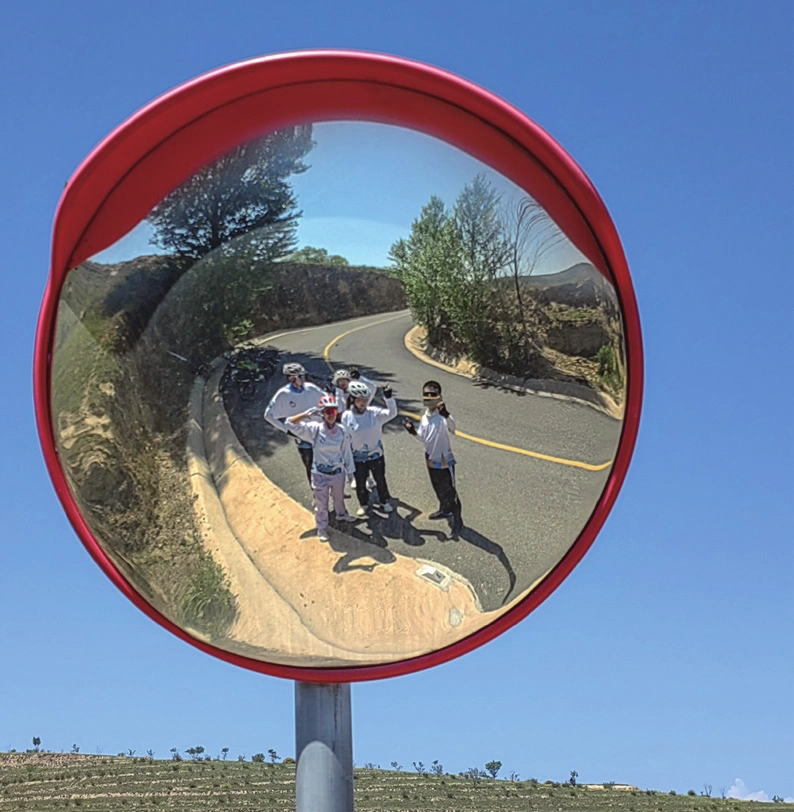
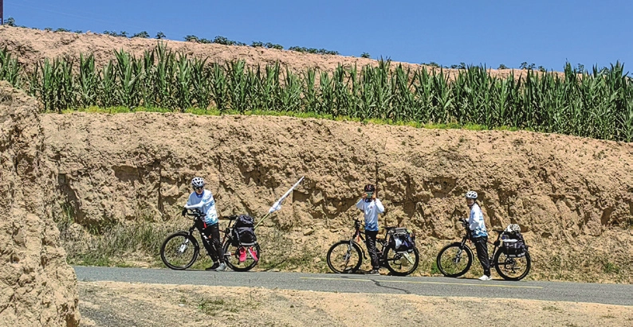

沉淀
原刊26
暑期，是一场属于灵魂的修行。关于它的一切，不存在于春风得意，一夜看尽长安花的时刻，也不存在于犹豫失落，潦倒新停浊酒杯的时刻。它是一场关于生命的跋涉，不知归途，不问来路，没有向前看的勇气，也没有回头的机会。我们唯一可以做的就是一直在路上，这条路哪怕大雨滂沱，哪怕泥泞不堪，哪怕寸草不生，在路上就会让人心安。暑期不知为我后来多少生死未卜、命悬一线的考试和 ddl 时刻提供了精神支持。


但是暑期却不是一场苦行，在被现实中诸多不可攀爬、不可量化的大山压得气喘吁吁之后，一场以数字为终点的旅行倒也可以苦中作乐，虽然里程不可被欺骗，但里程也不可骗人，只是我现在也没有搞清楚量化是否是一件好事。我只感觉我的心在离我而去，但是暑期一场沉淀了我的心。

